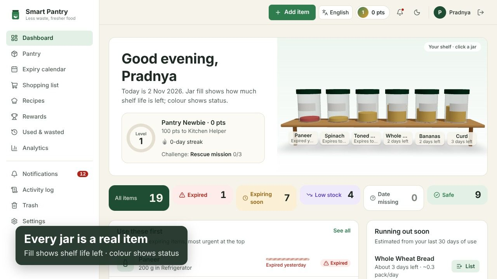
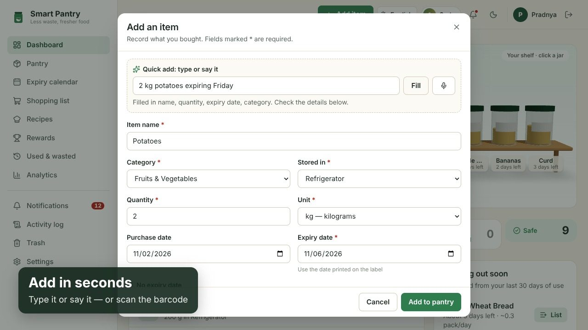
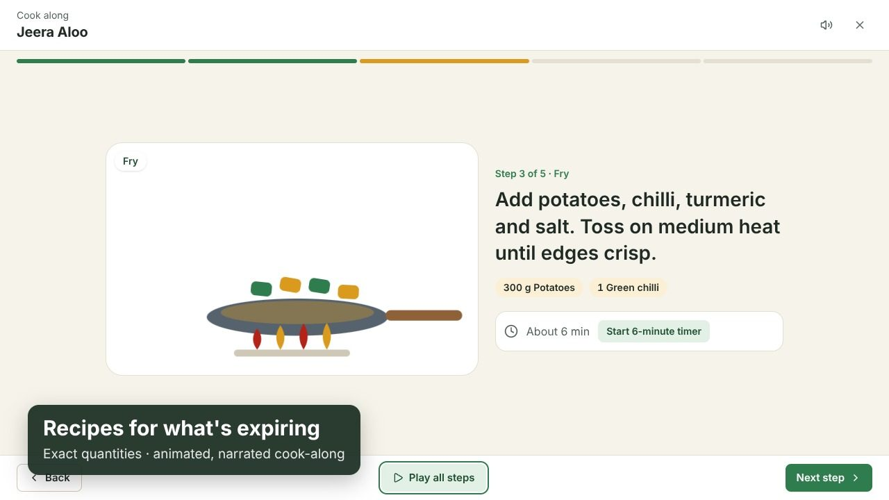
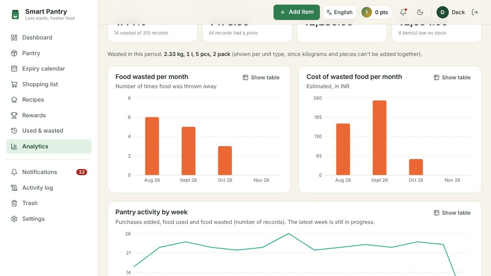
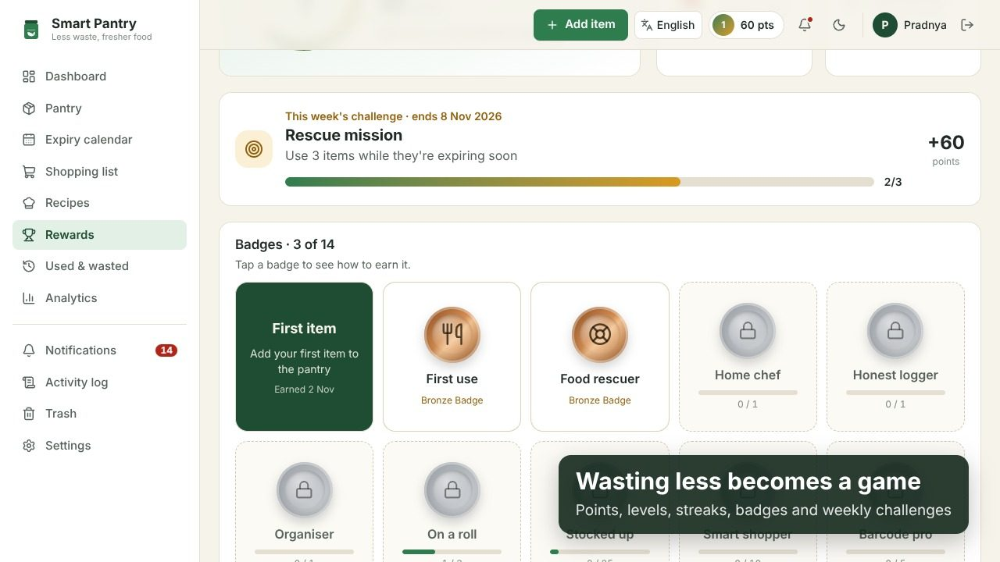
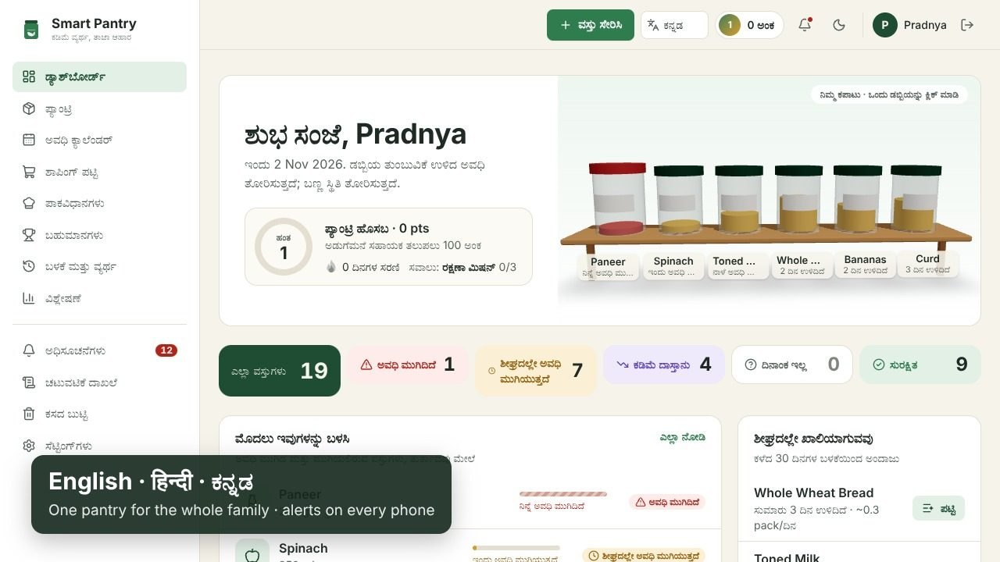

Working demo
A 1 minute 46 second walkthrough of the running app: sign-up, the 3D shelf, quick add, using stock first-expiry-first-out, the expired-food safeguard, shopping, recipes with a cook-along, analytics, notifications, family sharing, languages and rewards.
Why it matters
Most household waste isn't careless — food is forgotten at the back of the fridge, bought twice, or noticed only after its date.
Source: UNEP Food Waste Index Report 2024; India per-capita household figure as reported from the same index.
Features
Everything in the project brief, plus the things that make it work for a real family.
Batch-wise expiry (FEFO)
Each purchase keeps its own date; using stock always takes the batch that expires first. Opening a jar moves its expiry earlier.
Quick add by voice or text
“2 kg potatoes expiring Friday” fills name, quantity, unit, date, category and storage place. Barcode scan and CSV import too.
Recipes and cook-along
39 built-in recipes plus online ones, exact quantities that scale, and an animated, narrated step-by-step player with timers.
Smart shopping list
Low-stock items in one click; ticking one off puts it back in the pantry with its new expiry date.
Waste analytics
Monthly trends, top wasted items, reasons and real cost, with every chart readable as a table. CSV and PDF export.
Alerts everywhere
In-app, daily email and phone push notifications for expiring, expired, low-stock and running-out items — each sent once.
3D shelf and rewards
Every jar on the 3D shelf is a real item. Points, levels, streaks, 14 badges and weekly challenges reward wasting less.
Family sharing
One pantry for the whole household via an invite code, with editors and view-only members and a log of who did what.
English · हिन्दी · ಕನ್ನಡ
The whole interface switches instantly and is remembered per device; item names stay exactly as typed.
Screens
Taken from the running app with its demo data.






How it's built
A three-tier web app: React client, Node.js REST API, PostgreSQL database.
| Frontend | React 19, Vite, TypeScript, Tailwind CSS, Recharts, three.js (React Three Fiber); installable PWA with a service worker |
|---|---|
| Backend | Node.js, Express 5, Zod validation, scheduled daily reminders, Web Push and email |
| Database | PostgreSQL 16 with Prisma ORM and versioned migrations; transactions and row locks keep stock correct |
| Security | bcrypt password hashing, JWT in an httpOnly cookie, CSRF header, rate limits, strict Content Security Policy, every query scoped to the signed-in pantry |
| Deployment | Vercel or Render (web), Render (API), Neon (database); Docker Compose for a one-command local run |
Tested
Run it yourself
With Node.js 22 and a free PostgreSQL database (for example Neon):
git clone https://github.com/pradnyabhosalecs24-byte/Smart-Pantry → npm run setup → npm run db:migrate → npm run dev
Or with Docker: docker compose up --build, then open http://localhost:8080. Full steps are in the README.